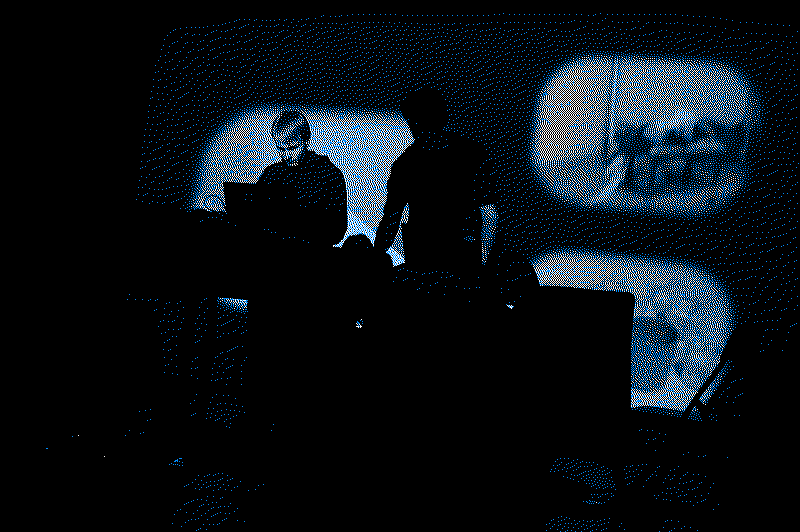

Solo
Although I would say that my work mainly revolves arround collaboration I have occasionally done solo shows and projects. When I started making music a few years ago I would record demos of my musical experiments (mostly in ppooll and ableton) and collect them in various folders which I later collected in a release titled summa&ötres.
Most of my solo work has based around live shows of some sorts and recordings are usually preperations for them, but who knows maybe one of these days I will sit down and make a proper studio record.
I also have a solo alter ego whose name is slummi, he makes slimy dance music and was originally conceived as a person who plays at parties but it seems he has a life of his own these days and he even got nominated for an award last year!
Final Boss Type Zero
When I met Jón Múli a couple of years ago we immedietly connected over a love of dance music and hip-hop. Very soon after we started collaborating and put out music on our label Spectral Assault Records. At the same time our friend Juanma (see below) was throwing these amazing Massage raves that were really cool and we wanted to play one so we formed a band to play at that event.
After a while the band starting taking on a new form and today it's more of a hybrid pop band that is influenced by electronic music we think is cool. We have 2 albums coming out soon (one with Xiupill which is a band that Múli and Juanma are both in) and got the Kraumur Award for our ep album thing 1000 cuts last year. Fun times!
Pellegrina
Juanma is also one of those people that influenced me a lot since I met him. He is intensley passionate about music and always willing to dig deeper for the sounds that truly excite him, which is a passion that we both share. Although he doesn't have a big background in producing music and is mainly a (phenomenal) DJ I still really wanted to make a project with him and after a trip we took together to New York we started coming up with the project. We compared influences and started to form a sound in our head that we needed to materialize with actual music. Ever since then we have been steadily working on new tracks in a project that feels equal parts like archeology and music making but is very exciting and dear to me.

Glupsk
I vividly remember when I saw Korter í Flog play in Mengi for the first time. Ölli was the drummer in that band and Villi the singer. I already knew Ölli because we are second cousins, although he is a little younger than me, but I had no idea he was capable of something like... this! I was blown away by their sound and energy and longform approach to playing that reminded me of Sonic Youth. At the same time Ölli was starting a band called sideproject that I thought was equally interesting and Villi was doing his own musical experiments as susan_creamcheese as well as putting out fantastic video art.
Over the years we have become great friends as peers in the same scene and Glupsk started as a kind of a weird joke. Me and Villi met in Mengi one afternoon right before he was moving to Belgium and we did a laptop improvisations that we recorded. Afterwards, we gave it the most random name we could think of, Glupsk, uploaded it to Bandcamp never intending to make a band. To our surprise a few days later someone wanted to invite the "band" to do a concert with them so we got Villi joining us via zoom while Ölli and Magnús Skúlasson played drums, and thus the band was born. We have some great releases out and plan on making a super-instrument for the project in the near future.
Soddill
To be honest me and Þorsteinn just wanted to hang out and make techno when this project was starting. It was also my forst forray beyond ambient, improvised and experimental music so it was a really fun time for me starting the project out. Our talented bestie and studio partner Ida joined the band later and we have been doing occasional shows and releases ever since. Always maintaining this idea of music making as a hang out. We are currently planning on an epic EP scheduled for the summer.
Atiseq
Diego was one of those people that gave me courage to go further when I was starting to take myself seriously in music. We instantly connected when he had just moved to Iceland from Argentina. We would always come up with some really fun concepts for making music resulting in ambitious and alien sounding records that are marked by improvisation and Diego's fantastic ear for beautiful melodies.
Over the years my favorite of these releases has become the one we did in my family's summerhouse a couple of years ago where we are just sitting and improvising on acoustic guitars with the sun setting in the background, we even took a Video of it!
pollur
This is a bit of an odd one. It's basically a Bandcamp dump where I release Max/MSP snippets where im proofing concepts and systems that I make for live performances. At the beginning I was very ambitious and wanted to make a release once a month if possible but that has obviously not been the case, but maybe one of these days this site will come back to life!
Agalma
Agalma is mainly just an idea. Me and Ragnheiður Elísabet, one of my closest friends and colleague from Mengi, started it as a label back in 2019, the idea being to pair different people together and record them improvise and put it out online. It evolved pretty quickly and got a life of it's own with 27 records out in the past couple of years! Some of them are improvisations while others are records that needed a home from our friends.